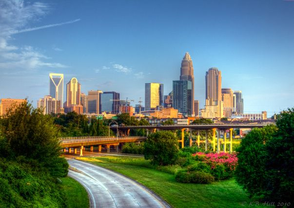

Top 3 areas to shoot in Charlotte

Camp North End
- A newly developed area with alot of flexibility
- Good for Industrial / Urban shoots
- Has a skyline view of the city from its main parking lot
- Conviently located near resturants, bars, and outdoor activities
Romare Bearden Park
- Located almost center city
- Good for Scenice / Nature shoots
- Has many amenties like a nice front lawn , waterfall, pergula, and much more
- Can sometimes be busy, best time to go is early evening
CPCC Parking Deck
- Located right outside of uptown
- Good for Automotive/ Fashion shoots
- Has arguably the best skyline view in all of Charlotte
- A much less know spot and almost never crowded